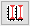
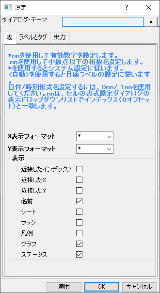
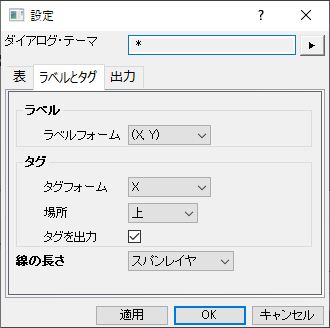
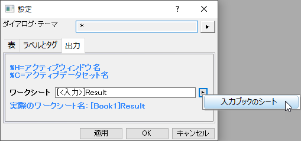

関連する動画はこちら：Vertical Cursor Gadget
関連する動画はこちら：Vertical Cursor Gadget
 関連する動画はこちら：Vertical Cursor Gadget
関連する動画はこちら：Vertical Cursor Gadget
垂直カーソルガジェットを使って、垂直区分プロットのデータポイントのXおよびY座標値を読み取ります。
このガジェットは、グラフウィンドウがアクティブなときに、ガジェットメニューから開く事ができます。
Origin 2021以降、 各レイヤにリンクしたカーソルを追加ボタン /各レイヤにリンクしたカーソルを削除の切り替えボタンが 追加され、リンクされたカーソルをすべてのレイヤに追加し、カーソルを同時に移動して、複数レイヤグラフの各レイヤのXY座標を読み取りることが可能になりました。 |
| タグとラベルを追加 | 選択したプロットの現在の位置にタグとラベルを追加すると、このタグのXY座標値が結果シートに出力されます。
このボタンをクリックしたときにこの出力が必要ない場合は、オプションボタンをクリックして設定ダイアログを開き 、ラベルとタグタブのタグを出力チェックボックスをオフにします。
|
|---|---|
| ラベルを非表示 | このボタンをクリックして、ラベルを非表示にするかどうかを指定します。Note：ラベルが非表示のとき、X値のみが、グラフの上下でタグ付けされます。 |
| ひとつの軸のすべての情報を表示/複数ラベル | 全データの情報を一つのラベルに表示する、または、各プロットに個別でラベルを付けます。 |
| 2番目のカーソルを追加/2番目のカーソルを削除 | このボタンをクリックして、2番目のカーソルを追加します。2つのカーソルの差を計算して出力できます。もう一度クリックすると、2番目のカーソルが消えます。 |
| 各レイヤにリンクしたカーソルを追加/各レイヤにリンクしたカーソルを削除 / |
このボタンをクリックして、各レイヤにリンクするカーソルを追加または削除します。2番目のカーソルが追加されている場合、各レイヤに2つのリンクされたカーソルがあります。 |
| フォントサイズを大きく/小さく
|
ラベルのフォントサイズを大きくまたは小さくします。 |
| Xにカーソルを移動 | 入力X値で指定した位置にカーソルを移動します。 |
| 結果出力
|
指定したワークシートにカーソルタブでリストしたXY座標値を出力します。Oキーを押すと現在の値もワークシートに出力されます。 |
| レポートシートに行く | レポートシートに切り替えます。 |
| オプション | 設定ダイアログを開きます。 |
| グラフをリンク/リンク解除
|
このボタンをクリックしてグラフブラウザを開き、現在のグラフにリンクするグラフを指定します。 |
| 詳細を隠す
|
カーソル表を開くか閉じるか指定します。 |
選択すると、X方向で最近傍のソースデータにカーソルをスナップします。
このテーブルは、垂直カーソルとデータプロットの交差についての情報を一覧表示します。
このテーブルは、2つのコンテキストメニューを含み、列とプロット表示をカスタマイズできます。
列ヘッダを右クリックしてメニューを開き、この表に表示する列を選択します。
Note: Origin 2021b以降、メニュー項目に凡例がリストに追加され、プロット名が同じまたは類似している場合に区別しやすいように、プロットの凡例を表に表示するかどうか選択できるようになりました。
列ヘッダの下の領域を右クリックして、別のメニューを開きます。 ここで、クリップボードにデータをコピーしたり、表にどのプロットを表示するか選択、リンクグラフのリンク解除、リンクグラフの保存/ロードを等の操作が可能です。
オプションボタン をクリックしてダイアログを開きます。 このダイアログには3つのタブがあります。
|  |  |
|  |
このタブでは次のことが可能です。
このタブでは、
出力結果のワークシートを指定します。
垂直カーソルを開き、 ボタンをクリックするとグラフブラウザが開き、グラフ同士をリンクできます。
ボタンをクリックするとグラフブラウザが開き、グラフ同士をリンクできます。
前回使用したものをロードボタンをクリックすると、前回リンクしたグラフが開き、再びリンクする準備ができます。
グラフが既にリンクされている場合、カーソルがグラフ上を移動した時に全てのプロットとそれぞれリンクしたグラフのデータ座標が表示されます。また、カーソルを使ってグラフにタグを追加/削除すると、リンクグラフでも追加/削除されます。
グラフがリンクされると、リンクされているグラフを示すアイコンが、リンクされているすべてのグラフの右上に追加されます。このボタンを右クリックすると、カーソルラインを制御するコンテキストメニューが表示され、次の操作を実行できます。